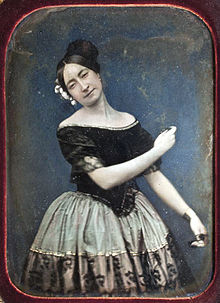

Antecedentes de la fotografia
|

|
La historia de la fotografía empieza oficialmente en el año 1839, con la divulgación mundial del primer procedimiento fotográfico: el daguerrotipo. |
Cronología
1521
La primera publicación sobre la cámara oscura es la de Cesare Cesarino, un alumno de Leonardo Da Vinci durante el Renacimiento. Por su parte, el científico Georgius Fabricus experimentaba ya con las sales de plata, notando algunas de sus propiedades fotosensibles.1558
Giovanni Battista della Porta, por sus publicaciones sobre el funcionamiento de la cámara oscura, se hizo popular entre los pintores de la época. Gerolamo Cardano sugiere una importante mejora: un lente en la apertura de la cámara, anteriormente un simple orificio o estenopo.1600
Durante el siglo XVII, la cámara que hasta ese momento era una habitación se transforma en un instrumento portátil de madera. Johann Zahn transformó esa caja en un aparato parecido al usado en los principios de la fotografía.1685
De acuerdo a tratados publicados por Zahn, la cámara ya estaba lista para la fotografía; pero todavía no se podían fijar las imágenes.
1777
El sueco Carl Wilhelm Scheele publica su tratado sobre las sales de plata y la acción de la luz, en latín y alemán; en 1780 en inglés, y un año más tarde en francés. En el estilo de las pinturas de artistas exitosos de este siglo como Canaletto parece evidente el uso como herramienta de la cámara oscura. Una cámara de este tipo que tiene grabado el nombre de Canaletto, se conserva en Venecia, aunque no está confirmado que efectivamente perteneciera al artista..1801
Pocos años antes de su muerte, el inglés Thomas Wedgwood hizo nuevos descubrimientos para capturar imágenes, sin lograr fijarlas adecuadamente.Inicios
A principios del siglo XIX, en el año 1824, el científico francés Nicéphore Niepce obtuvo unas primeras imágenes fotográficas, inéditas. La fotografía más antigua que se conserva es una reproducción de la imagen conocida como Vista desde la ventana en Le Gras, obtenida en 1826 con la utilización de una cámara oscura y una placa de peltre recubierta en betún.